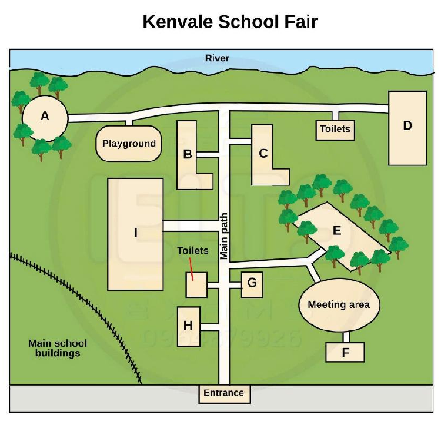

Phiếu trả lời Listening
Bấm số câu để nhảy tới câu đó. Bài làm được tự lưu trên máy này. Thời gian thi thật: khoảng 30 phút.
PART 1 Questions 1–10
Complete the notes below.
Write ONE WORD AND/OR A NUMBER for each answer.
Places to visit with children Alma Park
The Entertainment Room
The City
Bunyabbie Island
|
📜 Lời thoại Part 1
Now turn to Part 1 on page 2 of your question booklet. Part 1 You will hear a woman asking a man in a tourist information office about places to visit in the region. First you have some time to look at questions 1 to 6. Now listen carefully and answer questions 1 to 6. Good afternoon.
Can I help you? Yes, I'm looking for some places to visit when my sister and her children come to stay. They arrive this weekend from overseas. I'm new to the area and don't really know what to recommend.
Do you have any ideas? What about going to Alma Park to visit the zoo? Oh, I like the idea of that. Is it reasonably priced? Yes, it's not a bad price.
A standard adult ticket is normally $30, but there's a special deal for families of $65, which is a saving of $35.
That's a great deal. How do we get there from the city? You can go by bus. Is it very far? The 385 will get you there in approximately 40 minutes, depending on traffic.
There is another bus, the 388, but it takes 20 minutes longer, so it's worth waiting a few more minutes for the more direct bus. OK. Are there any special things to do there? Can you feed the animals or anything like that? They've stopped that, but most tourists love the fact that you're allowed to hold some of the animals and get your photo taken.
They just ask you to make a small payment to help with costs. Oh, the kids would love that. My sister also likes going to the theatre.
Is there anything good on at the moment? She especially likes comedies. There's a place called the Entertainment Room in Ascot. I'll just check their website.
Hmm, yes, there's a festival running at the moment with John Rosie as the main entertainer. He's really funny. How do you spell that? Is it R-O-Z-Y? No, it's R-O-S-I-E.
Got it. And when is it on? Next week. It says it starts on Tuesday with a special matinee show on the Wednesday.
It was supposed to finish on Friday, but because of the demand it's been extended to Saturday. It must be good then. Is it expensive? I don't think so.
Let's see. Oh, it says there's a special preview show on the Monday, and they're offering a discount on tickets that night. We'll try and go then in that case.
Before you hear the rest of the conversation, you have some time to look at questions 7 to 10. Now listen and answer questions 7 to 10. I also wanted to spend a day in the city centre.
The children will get bored just looking at the shops. Is there anything else for them to do? What's the museum like? It's very popular with children, and there's a very hands-on exhibition on at the moment. They'd love that.
Sounds good. And there's a workshop on, where they learn how to do origami. Will they need to bring anything special for that? On this leaflet it says that things like scissors and all of the paper are provided.
They just advise children to bring a box to carry the completed origami home in. Just a little one will do. I'm also looking for a weekend activity.
I've heard Bunyabi Island is great. Would we need a car to get round the island? A four-wheel drive is a great way to explore. You should also try snorkelling at Salty Lake.
Is that in the centre of the island, near the mountain? No, it's on the ocean side. OK, I'll get a map and check it out. I'd like to stay there at least one night, and I quite like the idea of taking a tent and sleeping out in the open air.
Are you allowed to camp there? That would be lovely, but I'm afraid...
PART 2 Questions 11–20
Questions 11–14
What does the speaker say about each of the following volunteer roles at the school fair?
Choose FOUR correct letters, A–F, next to Questions 11–14.
Comments
A An office will be provided for this role.
B More than one person is needed for this role.
C This is a new role for this year’s fair.
D This role will start next month.
E This role will mainly involve evening work.
F To do this role you need your own transport.
Volunteer roles
11 Entertainment co-ordinator
12 Advertising and promotion co-ordinator
13 Technical co-ordinator
14 Staffing co-ordinator
Questions 15–20
Label the map below.
Choose the correct letter, A–I, next to Questions 15–20.

15 Fairground rides
16 Entertainment stage
17 Café
18 First aid tent
19 Market stalls
20 Pony rides
📜 Lời thoại Part 2
You will hear a school principal talking to a group of parents who are volunteering at a school fair. First you have some time to look at questions 11 to 14. Now listen carefully and answer questions 11 to 14.
Good evening and thank you for coming to the Kenvale School Fair Volunteers Meeting. As you know, this is the biggest fundraising event in the school year, and as usual, we're expecting lots of people to come, which is why we're starting to prepare now, six months before the big day. I'll begin tonight by talking about the different volunteer roles, so you can decide what you'd like to do.
The entertainment coordinator position involves deciding what kinds of rides and activities will be at the fair, and making sure there's a good variety of things to do. From past experience, this role involves a lot of liaising with other helpers and the entertainers, which means that most of the work is done after office hours. We need an advertising and promotion coordinator to make sure that people hear about the fair and lots of people come.
We know this is a big job, so we've decided to have a couple of people doing it to share the load. The parent who did this role last year has just been offered a job, which starts next month, so she won't be able to lend us the benefit of her experience, sadly. The technical coordinator makes sure that there is a suitable stage for the performers, and that there are enough speakers and people can hear them and so on.
Now, this may sound like a technical background is required, but it's not, as you don't actually have to set up or fix anything yourself. Having a car is essential, though, because in the week leading up to the event, you'll need to be able to get to the school early in the mornings, and occasionally later at night. We also need a staffing coordinator.
This person will be required to look after the many helpers on the day of the fair. This role has just been created based on our experience of last year's event. We found that our volunteers felt a bit overworked, and so we're hoping that this role will make things easier.
It will help to reduce stress if you organise the helpers about a month before the fair. Before you hear the rest of the talk, you have some time to look at questions 15 to 20. Now listen and answer questions 15 to 20.
Now, moving on to the map of the school fair, I'll point out some of the more important areas that you'll need to know about so you can help direct the visitors. You can see that we'll be using the large grounds just behind the school, and we'll set up temporary areas and pathways there. The first thing I'll show you are the fairground rights, which are always popular with the children.
If you look at the map, you'll see the fair entrance at the bottom. From there, follow the main path in the direction of the river, and it's the third area on the left, the large rectangular area. The entertainment stage is a big feature of the fair, and this is where everyone will be able to see all the performers.
To find this, go straight along the main path until you get to the river. Turn right and follow the path to the end, and there it is. There's not much shade here, so we should remind parents to bring hats for their children.
If anyone wants a cold drink or a snack, then they'll ask you where the cafe is. Originally, we were going to put it opposite the toilets, but we've decided to put it near the river to take advantage of the views and breezes. You can see it on the map.
It's the circular area, surrounded by trees, near the playground. The first A tent is always an important part of the fair. We wanted to put that in an area that was easily accessible, and a bit separated from the other attractions, but near the entrance.
If you look at the map, you'll see it's south of the toilets, not far from the school fence line. The market stalls are where visitors will be able to pick up a bargain, or some homemade produce. Last year, these were located just south of the meeting area, but the stallholders complained that it was too exposed and hot.
So, this year, we've moved them to the north of the meeting area. Lots of good shelter provided by the trees here. Of course, there'll be the ever-popular pony rides.
To reach these, direct visitors to follow the main path from the entrance until they reach the L-shaped area on the left, next to the playground. That is the end of Part 2. You now have 30 seconds to check your answers to Part 2
PART 3 Questions 21–30
Questions 21–26
What is the student’s opinion on each of the following Environmental Science modules?
Choose SIX correct letters, A–I, next to Questions 21–26.
Opinions
A was surprisingly interesting
B covered too many topics
C included out-of-date materials
D involved practical applications
E supplied useful technical information
F was too basic to be useful
G provided unnecessary detail
H was relevant to a topic in the news
I seemed too limited geographically
Environmental Science modules
21 Statistics for environmental research
22 Sewage and drainage systems
23 Agriculture and food security
24 Sustainable energy
25 Government policy
26 Water management
Questions 27 and 28
Choose TWO letters, A–E.
27–28 Which TWO aspects of the course organisation did both Jamie and Martha like?
Questions 29 and 30
Choose TWO letters, A–E.
29–30 Which TWO suggestions for the written assignment do Jamie and Martha agree to recommend to Dr Brown?
📜 Lời thoại Part 3
Part 3 You will hear two students, called Jamie and Martha, discussing their environmental science course. First, you have some time to look at questions 21 to 26.
Now listen carefully and answer questions 21 to 26. Hi, Martha. Do you have time to talk? We have to submit our evaluations of our course next week, and I thought it'd be useful to discuss what we both think.
Good idea. That would help refresh my memory, especially about things we did in previous years. I agree.
So, let's talk about the modules we took. What about statistics for environmental research? I've always been hopeless with numbers, so I thought that I'd learn a lot. But, you know, it wasn't at a high enough level for me.
I actually had to do a lot of reading on my own. Me too. I had to get an additional reading list from the tutor.
Now, sewage and drainage systems. I wasn't looking forward to that one. Not exactly a pleasant subject, but, you know, the module convinced me that it's an essential topic to understand for both cities and rural environments.
Right. And, in the end, not a boring subject. Not at all.
It was quite a revelation. The module on agriculture and food security could have been good. But the assigned readings were only those ancient government publications.
And the lecture notes clearly hadn't been updated for years. I know. What about the module on sustainable energy? I really got into the project we had to do to invent something functional.
I devised a windmill to power my laptop. Yep. The projects were great.
So hands-on. Though the personal battery charger I built never really worked. Too bad.
But I'm sure you learned a lot nonetheless. I did. And the government policy module? I wish it had included policy in other countries.
It was a bit inward-looking, I thought, focused just on this country. I mentioned that to the lecturer, but she said it was best to concentrate on one country in depth at first. Maybe.
And there was that module called Water Management. I must admit, I got lost in the discussion about the issues of groundwater levels and flood risk management, which weren't that essential. You weren't the only one.
Before you hear the rest of the discussion, you have some time to look at questions 27 to 30. Now listen and answer questions 27 to 30. OK.
I thought some aspects of the course organisation were particularly helpful. Can we talk a bit about that? Of course. Actually, I was disappointed that I couldn't take any module whenever I wanted.
That's true. But the variety of modules on offer was a strong point and meant I managed to cover a lot of subjects. Me too.
More than I expected. I had wanted to finish the course early by doing an extra module each term, which would have been useful, but unfortunately that wasn't allowed. I had to wait to do some modules, which I found hard to schedule.
And I think more assigned reading for the modules would have made the lectures easier to follow. That would have been good. But I was pleased that the course organisers were able to provide modules focusing on real-life issues, which we can apply later when looking for jobs.
True. And I would have hated it if it had all been theory. What about the written paper we had to do for Dr Brown? Are there any things we could suggest to improve the way that's handled? Well, I got lots of help from Dr Brown and his assistant in narrowing down what I wanted to write about.
Yes, they stopped me from doing something too ambitious. But choosing a topic right at the beginning of the module was difficult. Maybe he could postpone the decision until halfway through the term.
Good idea. I was happy with the word limit for the assignment though. Well, as usual, I could have written on and on, but the limit made me refine my thoughts, so it was OK in the end.
I wish I could have had a session with Dr Brown after he'd marked my written paper. I know it would be time-consuming, but it would have been really useful. Actually, I was satisfied with Dr Brown's written feedback.
It was amazingly detailed, so I don't think I needed more. But I wish they could arrange sessions where students get together and help each other before submitting their written work. Good idea.
If they provided time for that, it would be quite convenient. Right. Now that we've almost finished our course, it's time to think about our career prospects.
What type of organisation do you hope to work for? That is the end of Part 3. You now have 30 seconds to check your answers to Part 3.
PART 4 Questions 31–40
Complete the notes below.
Write ONE WORD ONLY for each answer.
The Music of Salvatore Sciarrino Biographical details
Work
Musical characteristics
Concert piece
|
📜 Lời thoại Part 4
Part 4 You will hear a music student giving a talk about an Italian composer. First you have some time to look at questions 31 to 40. Now listen carefully and answer questions 31 to 40.
Good morning. We're really pleased that our university is going to hold a concert featuring the music of the Italian composer Salvatore Schiarino. He's considered one of the leading composers of modern classical music in Europe.
His music is highly unusual, so in order to prepare you for this concert, I'm going to talk about his life and music. First, some biographical details. Salvatore Schiarino was born in the Italian city of Palermo in 1947.
Though he did receive some music lessons, he is mainly self-taught as a composer. After a few years of university in his home city, he moved to Rome in 1969, where he studied electronic music. This experience served as a turning point in the development of Schiarino as a composer.
Turning to his work, he composed a great deal in the 1970s and was a music teacher until 1982. Apart from composing music and teaching, he has also produced a large number of essays on a range of topics, such as the philosophy behind his work and musical form. Throughout his career, he has won numerous prestigious awards, most notably a major prize in 2011 which recognised his musical originality.
So you could say that he is one of the most important composers of our times. Now I'll talk about the characteristics of his music, which some people are a bit surprised by. The first thing that many listeners will notice about Schiarino's music is the frequent use of silence.
What is also striking about his music is his preference for extremely soft sounds that are sometimes at such a low volume that they can hardly be heard. The other unusual aspect of his music is that he frequently requires musicians to play their instruments in unconventional ways, so that, for example, a violin may end up sounding very strange and creating sounds we generally associate with nature. Actually, his novel instrumental techniques have often been imitated by other composers.
As a result, he is widely regarded as a pioneer in terms of creating new sounds. It may sound strange, but Schiarino himself has likened his music to a volcano viewed from afar. As you'll see, it builds up slowly to an exciting climax.
Let's move on to talk about the particular piece that we'll hear at the concert. Many people consider it to be his finest work to date. It's an immense piece of music for piano, chorus and orchestra that was completed in 1979.
The work is dedicated to a friend who died unexpectedly, so it was written as a kind of memorial. In many ways, it is representative of his work as a whole in terms of the sound that it creates. It's technically formidable and it's a very challenging piece for musicians to play.
The piece opens with a low sound of great complexity that is similar to thunder. This low-pitched noise is sustained almost uninterrupted for 45 minutes, which may sound quite boring, but I found it to be very haunting and atmospheric. The sound, by the way, is created by large vibrating sheets of metal, which are slowly manipulated by two percussionists.
There are very quiet and strange chords produced by string instruments and very complex piano melodies that quietly appear and then disappear. Even though the piece will be, for many people, very unusual in terms of the sounds it creates, it actually has a very conventional structure, which is just another surprising aspect of Schiarino's work. Now let's move on to another work.
That is the end of Part 4. You now have one minute to check your answers to Part 4. That is the end of the listening test. You now have ten minutes to transfer your answers to the listening answer sheet.
Phiếu trả lời Reading
Bấm số câu để nhảy tới câu đó. Bài làm được tự lưu trên máy này. Thời gian thi thật: 60 phút.
READING PASSAGE 1 Questions 1–13
You should spend about 20 minutes on Questions 1–13, which are based on Reading Passage 1 below.
The history of the guitar
An overview of the origins of the modern guitar
A The earliest stringed instruments currently known to archaeologists are bowl harps. For millennia, people made bowl harps using, for example, tortoise shells as resonators, with a bent stick for a neck and one or more gut or silk strings. The world’s museums contain many such harps from the ancient Sumerian, Babylonian, and Egyptian civilisations. Around 2500–2000 BC more advanced harps, such as the beautifully carved 11-stringed instrument found in the tomb of Queen Shub-Ad in ancient Mesopotamia, now modern day Iraq, started to appear.
B The tanbur* probably developed from the bowl harp. It was different from the bowl harp in that its neck was straightened out to allow the strings to be pressed down to create more notes. Tomb paintings and stone carvings in Egypt indicate that harps and tanburs – plus flutes and percussion instruments – were being played together 3,500–4,000 years ago. Archaeologists have also found many similar relics amongst the ruins of the ancient Mesopotamian civilisation. Many of these instruments have survived into modern times in almost unchanged form, for example folk instruments of the region such as the Turkish saz and Afghan panchtar.
C At 3,500 years old, the tanbur which belonged to the Egyptian singer Har-Mose is the earliest known example of this instrument. Har-Mose’s tanbur had three strings and a plectrum suspended from the neck by a cord. The soundbox, which increased the volume, was made of beautifully polished cedarwood and covered in rawhide. It can be seen today at the Archaeological Museum in Cairo.
D In order to distinguish guitars from other stringed instruments, it is helpful to have a broad definition of the guitar. Music expert Dr Michael Kasha defines a guitar as having ‘a long, fretted neck, flat wooden soundboard, ribs, and a flat back, most often with sides that curve inwards’. The oldest known visual representation of such an instrument is a stone carving at Alaca Huyuk in Turkey, which shows a 3,300-year-old instrument with a long neck and sides that clearly curve inwards.
E The name ‘guitar’ comes from the ancient Sanskrit word for ‘string’ – ‘tar’. Many popular stringed instruments used in central Asia today have existed in an unchanged form for several thousand years, as shown by archaeological finds in the area. Many have names that end in ‘tar’, with a prefix indicating the number of strings, such as the doter, a two-stringed instrument found in Turkestan, and the Persian three-stringed setar and four-stringed chartar. The Indian sitar almost certainly took its name from the setar, but over the centuries it evolved radically, following the Indians’ own aesthetic and cultural ideals.
F Tanburs and harps spread around the ancient world with travellers, merchants and seamen. The earliest guitar-like instruments to arrive in Europe had, most often, four strings. Many such instruments, and variations with from three to five strings, can be seen in mediaeval illustrated manuscripts. They were also carved in stone in European churches and cathedrals, from the first century AD through until the 13th century.
G When the four-stringed Persian chartar arrived in Spain, however, it changed in form and construction, acquiring pairs of strings tuned to the same note instead of single strings. It became known as the chitarra. By the middle of the 14th century, the chitarra had become dominant, at least in most of Europe. The earliest known music for the eight-stringed chitarra was written in 16th-century Spain. The ten-string version first appeared in Italy at the same time, and gradually replaced the eight-stringed instrument. A further two strings first appeared in the 17th century, an innovation which guitar makers all over Europe quickly took up. However, this twelve-string arrangement gradually gave way to six single strings across the continent. The six-stringed guitar can thus be said to be a development of the twelve-string, rather than vice versa, as was thought previously.
H At the beginning of the 19th century, the present-day guitar began to take shape, although bodies were still fairly small and narrow-waisted. The modern classical guitar first appeared in its current form in the mid-19th century, when the Spanish guitar maker Antonio Torres increased the size of the body, altered its proportions, and introduced the revolutionary fan-braced top**. His design radically increased the volume and improved the tone of the instrument, and very soon became the norm. This design has remained essentially unchanged to this day.
I At the time when Torres made his breakthrough, German immigrants to America – among them Christian Friedrich Martin – began making guitars with X-braced tops. Steel strings, which became widely available several decades later in the early 1900s, offered the promise of much louder guitar, but the increased tension was too much for the fan-braced top. The stronger X-braced top proved equal to the job, and quickly became the industry standard.
J At the end of the 19th century, guitar manufacturer Orville Gibson added steel strings to a body constructed like a cello, a combination which produced more volume. The electric guitar was born when pickups were fitted to Hawaiian and jazz guitars in the late 1920s, but met with little success until 1936, when Gibson introduced its famous ES150 model.
* tanbur: a long-necked stringed instrument with a small pear-shaped body
** fan-braced top: a strengthening structure in the shape of a fan inserted into the soundbox
Questions 1–6
Choose TRUE if the statement agrees with the information given in the text, choose FALSE if the statement contradicts the information, or choose NOT GIVEN if there is no information on this.
1 The instrument found in Queen Shub-Ad’s tomb is the world’s oldest known version of a harp.
2 Today’s Afghan panchtar is very similar to an ancient Mesopotamian instrument.
3 The Egyptian singer Har-Mose was an excellent tanbur player.
4 Cairo Archaeological Museum contains many historic musical instruments.
5 The instrument carved in stone at Alaca Huyuk is consistent with Dr Michael Kasha’s definition of a guitar.
6 The different instruments that appeared in medieval literature had the same number of strings.
Questions 7–13
Complete the table below.
Write ONE WORD ONLY from the passage for each answer.
The development of the guitar
| Date | Type of instrument | Notes |
|---|---|---|
| 13th–19th century | Chitarra |
|
| from around the 1850s | Classical guitar |
|
| X-braced top guitar |
|
|
| 1920s onwards | Electric guitar |
|
READING PASSAGE 2 Questions 14–26
You should spend about 20 minutes on Questions 14–26, which are based on Reading Passage 2 below.
Playing soccer
There are many differences between playing soccer in the street and joining a youth team in an organized league in the USA
A Street soccer, as its name implies, is an informal variation of the sport, often played on the street, particularly in urban areas. There are many reasons for the widespread popularity of street soccer. Unlike youth soccer, its more formally organized counterpart, no large space is needed, and goal posts, corner markers, and marked lines, associated with the formal game, are typically absent, as are game officials or referees. Another attraction of street soccer is that it is played frequently and competitively, but does not necessarily require standard 11-a-side teams or fixed playing positions. Unlike in youth soccer, inexperienced street soccer players rarely learn from repetitive technical and tactical drills. Instead, they learn from their poor performance in competition, unconscious of the skills they are nonetheless developing, and without older adults or coaches present. Players learn without effort through playing the game, and soon attain an almost natural feeling for the sport.
B However, there are lots of cities in the world today where conditions are such that street soccer is no longer possible. Congested traffic now dominates where games were once played. Parks and open fields are used as hangouts for older teenagers with other interests. Add to this the requirement in many localities for official permits to use public spaces and the managed schedules that many young people have today, and spontaneous play of any kind is hard to imagine.
C In spite of all these obstacles, which are probably solvable in most instances, there is another sociological explanation of why in many places street soccer doesn’t enjoy the same popularity it once did. In his book How Soccer Explains the World, US writer Franklin Foer observes: But for all the talk of freedom, the 1960s parenting style had a far less relaxed side too. Like the 1960s consumer movement which brought seat belts and airbags to cars, the (youth) soccer movement felt like it could create a set of … regulations that would protect both the child’s body and mind from damage. Soccer leagues like the one I played in as a child handed out ‘participation’ prizes to every player, no matter how few games his (or her) team won…. Where most of the world accepts the practice of using your head to hit the ball as an essential element of the game, some (youth) soccer parents have worried over the potential for injury to the brain. An entire industry grew up to manufacture protective headgear…. Even though very little medical evidence supports this fear, some youth leagues prohibited heading the ball altogether.
D A growing body of people don’t believe street soccer involves a legitimate educational method. They argue that children need to be taught by experts. Youth soccer instruction now begins with four-year-olds, so that they will have an advantage as six-year-olds. This need to get ahead brings with it a fear of falling behind that only expert instruction can prevent. This type of instruction leaves no room for the trial and error approach of street soccer.
E One of the basic ideas of street soccer is that young players are assigned a particular role by a better player and are expected to play for the good of the team. Such an assignment runs counter to the idea of youth soccer that every child needs to learn every position and will benefit from doing so. In street soccer, you fill the role that you are best suited to at a particular time. While this role assignment can change from game to game, the purpose is always the same: to get the best out of each individual at any given moment.
F In street soccer, children have to learn patience, to wait their turn, to realize that they are not entitled to make decisions, or even be listened to simply because they show up. Positions of responsibility are earned through competition within the team. Younger players in street soccer must wait to attain those positions. In youth soccer, however, with its overly democratic values, youngsters are guaranteed their time in the spotlight. Whether it’s their turn to be captain, to play a central position or to take a crucial shot, youth soccer players come to believe that hard work and patience aren’t really necessary.
G Not only does every youth soccer player get a chance, it is assumed that each individual has played well. ‘Everyone’s a winner; no one’s a loser’ is a guiding principle of youth soccer. This ensures each individual goes away positive about themselves. No one can leave a game or a practice feeling bad. But, if there really are no losers, then why try at all? Since giving less than your best receives the same reward as giving your best, why go to any extra effort? In street soccer, every game results in a winner and a loser and everyone knows who is who. Losing a game is a common experience and players learn early on how to handle this. As a result, unlike most youth soccer players, they acquire resilience.
A further difference between these two strands of soccer is that in street soccer a formal record is not kept. You can lose one day and win the next. The results are only temporary and are forgotten within minutes of the end of the match. But in organized youth soccer, the position each person plays and the results are formally noted and maintained throughout a season.
Questions 14–19
Reading Passage 2 has seven sections, A–G.
Which section contains the following information?
Write the correct letter, A–G, in boxes 14–19.
14 a contrast between the ways young players gain experience of playing different positions
15 examples outside sport of greater emphasis on individual safety
16 a description of methods of selection for leadership on soccer teams
17 details of urban changes that discourage street soccer
18 a mention of the lesson that failure teaches street soccer players
19 an explanation of why youth soccer emphasises the need for coaches
Questions 20 and 21
Choose TWO letters, A–E.
The list below gives some possible reasons for the popularity of street soccer.
20–21 Which TWO of these reasons are mentioned by the writer of the text?
Questions 22 and 23
Choose TWO letters, A–E.
The list below gives some possible results of the 1960s parenting style.
22–23 Which TWO of these results are mentioned by Franklin Foer in the excerpt from How Soccer Explains the World?
Questions 24–26
Complete the summary below.
Write ONE WORD ONLY from the passage for each answer.
Winners and losers For youth soccer players, a key is that they should always come away from the game with a positive attitude. In this respect, regardless of the effort the players make, they get some kind of at the end of a game. In street soccer, however, players gain resilience because they have to learn to cope with failure. But the outcome of a match isn’t remembered for long. In fact, no-one ever keeps a of the results of games. |
READING PASSAGE 3 Questions 27–40
You should spend about 20 minutes on Questions 27–40, which are based on Reading Passage 3 below.
The History of Chocolate
A Chocolate is now perceived as a ubiquitous indulgence, whether consumed as confectionery or a beverage, readily accessible in global markets. However, it may come as a surprise that chocolate was once regarded as a commodity of extraordinary value. The discovery of the cocoa tree, the source of chocolate, occurred approximately 2,000 years ago in the lush tropical rain forests of the Americas. The evolution of the chocolate — from a regionally significant Mesoamerican drink to globally consumed confectionery — has been shaped through cross-continental cultural exchanges and the successive influences of multiple civilisations.
B Historians suggest that the ancient Maya pioneered cocoa tree cultivation in Mesoamerica, with evidence dating back approximately 2,000 years. They transplanted cocoa trees from the dense rain forest into their domesticated gardens, where cocoa beans were initially roasted and ground into a smooth paste. The paste was combined with spices and water to produce unsweetened chocolate beverages. The Maya also employed a distinctive technique of transferring the liquid back and forth between containers, generating a foamy layer on the drink’s surface.
C Cocoa and chocolate were integral to Maya culture, commonly depicted in their architectural structures and artistic works. While the aristocracy, particularly the royal families, consumed chocolate during elaborate ceremonies, even less privileged groups occasionally savoured the drink. Furthermore, cocoa beans served as a powerful emblem of marital union and were ritually exchanged during wedding ceremonies.
D The Aztec civilisation in Mexico regarded chocolate as a prestigious commodity, despite being geographically unable to cultivate cocoa trees within their heartland. Accordingly, they sourced cocoa beans through extensive trade networks, even utilising them as currency for tax payments. Chocolate held an exclusive function within Aztec imperial and religious ceremonies, where priests offered cocoa beans as divine offerings and prepared sacred chocolate drinks. Due to the scarcity of cocoa beans, consumption remained restricted to the societal elite, with historical accounts suggesting Emperor Montezuma consumed up to 50 cups daily. Linguists trace the term ‘chocolate’ to the Aztec Nahuatl word xocolatl, meaning ‘bitter water’ in the Nahuatl language, though some scholars argue that it has hybrid origins combining Maya and Nahuatl linguistic elements.
E In 1502, explorer Christopher Columbus introduced cocoa beans to Spain after voyaging to Mesoamerica, and later Spanish explorer Hernán Cortés quickly recognised the potential economic value of chocolate. Upon arriving in present-day Mexico in 1519, Cortés observed that chocolate beverages would appeal to the Spanish. After conquering the Aztec Empire, Spanish forces exported confiscated cocoa supplies to Spain. In response to the growing demand, Spain began cultivating cocoa trees in its American colonies. Spanish elite first developed a taste for sweetened chocolate drinks, but the beverage rapidly spread across Europe. England, the Netherlands, and France followed suit by establishing cocoa plantations in their own colonies. By the 18th century, chocolate remained primarily a luxury restricted to the affluent. However, the Industrial Revolution’s technologies enabled mechanised production, dramatically reducing costs and making chocolate available to a broader population.
F Cocoa trees are cultivated across multiple countries in Africa, Mesoamerica, and South America, thriving in cool, shaded environments within equatorial zones. Despite widespread cultivation, cocoa farming remains labour-intensive, due to the trees’ requirement for specific water thresholds, temperature ranges, soil compositions, and protection from environmental threats. Approximately five years after planting, cocoa trees begin to yield large, pod-shaped fruits that grow on the trunk. These pods contain the beans used in chocolate production. While several types of cocoa trees exist, the bulk of the chocolate is produced from the seeds of the most commonly cultivated varieties.
However, farmers opt to grow more specialised types, such as Criollo or Trinitario, valued for distinctive flavour profiles. Unexpectedly, cocoa trees grown on farms are more vulnerable to disease and pests than their wild counterparts. Cocoa cultivation presents a strenuous endeavour for farmers, who sell their harvests on futures markets, exposing their incomes to external market fluctuations.
G The process of chocolate production involves a series of steps, carried out in specialised factories where cocoa beans are meticulously processed. Workers first sort, clean, and roast the beans before extracting the outer shells, leaving only the inner nibs. These nibs are then ground into a dense paste known as chocolate liquor, which is subsequently separated into two components: cocoa solids and cocoa butter. Following standardised formulations, chocolate manufacturers blend the chocolate liquor with precise ratios of sugar, milk, and cocoa butter. The resulting mixture, often referred to as the ‘crumb’, undergoes fine grinding to create a smooth consistency. Finally, the mixture is then subjected to two additional processes — conching and tempering — before being placed into moulds to create various forms, such as bars or other chocolate products.
H Chocolate holds significant global economic value, with the manufacturing industry generating over $5 billion annually from cocoa crops, and its reputation remains most prominent in Europe and the United States. For instance, US cocoa product imports reached $1.4 billion in 2005. On average, Americans consume over five kilogrammes of chocolate per person each year. In addition, upscale chocolate boutiques, which offer premium chocolates, have gained significant popularity. Many of these shops specialise in artisanal chocolates, crafted with unique flavour profiles. Renowned chocolate brands such as Cadbury, Godiva, Lindt, and Ferrero Rocher dominate the market.
However, the cocoa and chocolate production sectors often face challenges related to fair trade, sustainable development, and environmental preservation. These issues are now being actively addressed by industry stakeholders, including officials, activists, and researchers, who are working closely with farmers to promote farming practices that foster sustainability and protect the environment.
Questions 27–31
Reading Passage 3 has eight paragraphs, A–H.
Which paragraph contains the following information?
Write the correct letter, A–H, in boxes 27–31.
NB You may use any letter more than once.
27 the part of cocoa trees used for chocolate production
28 annual chocolate consumption per capita in the United States
29 the higher likelihood of cultivated cocoa trees being attacked by insects
30 a community which developed a preference for sweetened chocolate beverages
31 an approach by which ancient Mexicans could acquire cocoa beans
Questions 32–36
Choose TRUE if the statement agrees with the information given in the text, choose FALSE if the statement contradicts the information, or choose NOT GIVEN if there is no information on this.
32 The Mayan ruling class forbade the use of cocoa and chocolate in rituals.
33 The Spanish explorer Hernán Cortés had made an investment in chocolate and chocolate beverages.
34 Wild cocoa trees are more susceptible to infectious diseases than cultivated ones.
35 During chocolate production, some of the seeds are discarded.
36 Chocolate enjoys more prestige in Europe and the United States than in any other country.
Questions 37–40
Complete the flow-chart below.
Write NO MORE THAN TWO WORDS from the passage for each answer.
From Cocoa Beans to Chocolate
| Seeds |
| ↓ |
| classifying, cleaning, and roasting |
| ↓ |
| stripping their |
| ↓ |
| Nibs |
| ↓ |
| crushing, producing {G} |
| ↓ |
| mixing with measured quantities of substances such as sweeteners, liquid dairy, and |
| ↓ |
| Crumb |
| ↓ |
| crushing finely to obtain a smooth texture |
| ↓ |
| manufacturing diverse shapes of chocolate in |
| ↓ |
| Chocolate |